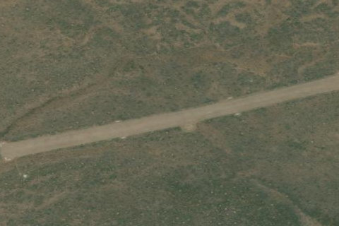

HOLLOW TOP
0U7 · ID

Aerial imagery source: Esri, Vantor, Earthstar Geographics, and the GIS User Community
| Identifier | 0U7 |
|---|---|
| State | ID |
| Runway length | 2,500 ft |
| Runway width | 140 ft |
| Surface | TURF |
| Runway | 05/23 |
| Elevation | 5,359 ft |
| Ownership | public |
| CTAF | 122.9 |
| Coordinates | 43.32375, -113.5905 |
Notes
[idaho_itd] State Airfield [shortfield] Location Overview Hollow Top (0U7) is a public-use backcountry airstrip in south-central Idaho, sitting about 18 miles east of the small town of Carey on open sagebrush rangeland known as the Arco desert. The surrounding terrain is high desert flat, at an elevation of roughly 5,359 feet, and the strip is generally in the same broad region as Craters of the Moon National Monument and Preserve, which lies between Carey and Arco. It's remote, undeveloped country with no nearby town services at the field itself. Camping & Recreation Hollow Top itself is a bare-bones strip with tie-downs but no developed camping infrastructure, water, or facilities on-site, so any camping there would be primitive, dispersed-style camping typical of Idaho backcountry airstrips. For more established recreation and camping, pilots and visitors can head toward Craters of the Moon National Monument, which offers the NPS-run Lava Flow Campground along with hiking trails, lava tube caves, and dark-sky stargazing, or toward Arco itself, which has private RV parks and campgrounds. The Lost River Valley in the area is also popular for off-road/ATV use, hunting, and wildlife viewing. Notes & Warnings The single runway, 5/23, is a 2,500-foot turf surface, and pilots should be aware there is no line of sight between the two runway ends, meaning the strip has a hump or dip in the middle that hides one end from the other. The field gets no winter maintenance, so it's unsuitable for snow-season operations, and the surface is subject to ongoing damage from livestock, ground vehicles, and rodents, so surface condition can vary and rough patches or burrows are possible. Animals are commonly present on and around the airport, adding to the need for a careful low pass before landing. There are no fuel services or airport facilities on-site, so this is very much a fly-in-prepared, self-sufficient kind of strip. History Hollow Top is a classic example of Idaho's network of rustic, state-supported backcountry airstrips, many of which trace back to mid-20th-century ranching, firefighting, and rural access needs before becoming recreational fly-in destinations. It's cataloged by the Idaho Division of Aeronautics and the Idaho Aviation Association as one of the state's backcountry strips, maintained at a basic level with simple navigational aids like a windsock and segmented circle rather than any formal airport infrastructure. Its enduring appeal comes less from any singular historical event and more from its role as one of many small, informal desert landing strips that Idaho pilots have used for decades to access remote high-desert terrain for recreation, wildlife viewing, and simply the experience of backcountry flying.